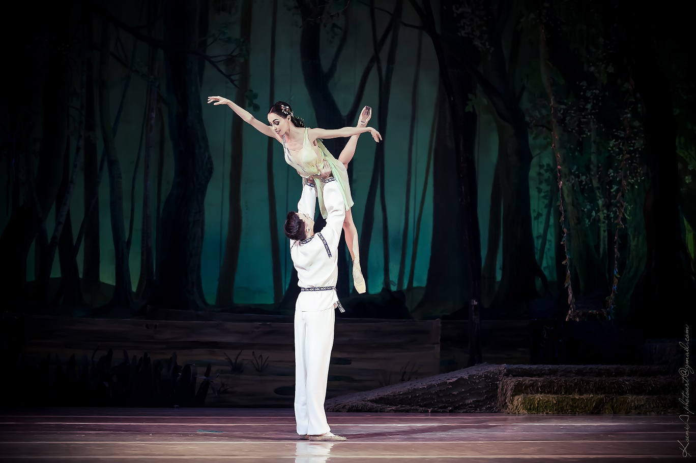

Театр бойових дій: як українське мистецтво народжується під час тривог
Колись Вінстона Черчилля спитали: «Навіщо фінансувати культуру, коли у країні йде війна?», він відповів: «А заради чого, власне, ми тоді воюємо? Навіщо нам перемога, коли не буде культури?»
Культура завжди була другим фронтом. Думаємо, з початком повномасштабної війни багато людей на собі відчули рівень її впливу: на політику, пропаганду, національний дух і навіть, банально, на наше з вами моральне становище. Зараз українське мистецтво — це не просто заміна культури країни-агресора, яка була до цього так сильно поширена на наших землях. Нині актори українських театрів змінюють свою діяльність і йдуть на фронт, концертні зали стають бомбосховищами й, на жаль, для багатьох останнім прихистком; наші співаки збирають мільйони на допомогу армії, а про українських митців говорить увесь світ... Та що вже казати, дев‘ятий рік наш горе-сусід веде з нами війну, зокрема і на культурній ниві. Абсолютно безкультурними методами, за допомогою пограбувань та знищення нашої спадщини, насильства, вбивств мирних жителів та окупації, росіяни «захищають» на наших землях свою «російську культуру», яка, мабуть, це все й породила. Одразу пригадуються рядки актора, режисера й, за сумісництвом, поета та військового Романа Семисала: Ця війна, що вростає у тебе коренем, вибухає в тобі п‘яними віршами, нагодує тебе по горло коливом, зробить мертвих кращими, живих — гіршими. Мистецтво зараз — це не тільки про порятунок психіки, про спробу відірватися від новин. Мистецтво — це в першу чергу надпотужна зброя. Адже війна — це завжди про смерть і руйнування, у той час, коли творчість — завжди про створення і життя. І сьогодні український культурний діяч кожного дня власноруч перемагає смерть, коли дарує світові свої нові витвори й шедеври. Але не завжди ми маємо змогу подивитися за лаштунки: як уся ця краса народжується під час обстрілів і повітряних тривог, і чим живуть ті люди, які щодня її створюють, почути їхні особисті історії. Саме з цією метою було написано цей мультимедійний лонгрід: хоч трошки відкрити завісу нашої культурної індустрії та показати, що її створення — це плідна праця кожного українського діяча. Тож розповідаємо, як проходить пекельний сезон для української культури, а також чому вона попри все повинна продовжувати жити.
Для того, щоб краще розуміти, про що буде далі йти мова, треба спочатку розібратися, що ж таке культурна індустрія, чим вона відрізняється від її сестри-близнючки — креативної індустрії? Тож спробуємо відрізнити два суміжних поняття, які часто плутають. Культурна індустрія — це вид економічної діяльності, яка напряму стосується мистецтва і культурної спадщини, а саме: аудіовізуальне, сценічне мистецтво, виставки, галереї, народні ремесла тощо. Продукти креативної індустрії мають більш утилітарну, практичну ціль, тож до них відносяться такі напрямки, як дизайн, мода, реклама, архітектура тощо. Культурна спільнота є доволі гнучкою та винахідливою, що завжди приносить державі певний економічний профіт. За результатами опитування, 74% діячів культури попри повномасштабну війну продовжують займатись своєю професійною діяльністю, а також поєднують її із волонтерством. Потік коштів в Україну забезпечується навіть у тому випадку, коли культурний діяч працює за кордоном: наприклад, дає там свої концерти та вистави.
Звісно, під час такої великої війни, яку ми маємо зараз, останнє, що здається важливим — це створення нового культурного продукту. У пріоритеті — генератори, автомобілі, які поїдуть на фронт, збори на допомогу Збройним Силам України, солярка, снаряди, теплі устілки для армійських чобіт... Сьогодні важливо вижити. А кіно ще зніметься, п'єси ще зіграються, пісні ще напишуться. Потім, коли-небудь... Після війни. Але правда в тому, що все це важливо вже сьогодні. Війна вже має свій вплив на нашу культуру: на мову, якою розмовляють сьогодні наші люди, на те, як називаються міста і вулиці, і, звичайно ж, вона сприяє певним соціальним змінам. Але й культура має величезний вплив на перебіг війни. І для того, щоб якнайкраще проілюструвати цей факт, варто звернутися до світової історії. Друга світова війна торкнулася практично всіх сфер людського життя, навіть зовсім простих речей: їжа, яку люди їли, фільми, які вони дивилися, і музика, яку вони слухали. Війна, особливо зусилля союзників виграти її, стала темою для багатьох пісень, фільмів, коміксів, романів, творів мистецтва, комедійних номерів — усіх можливих форм розваг і культури. Щобільше, у багатьох випадках ці твори та їхні автори насправді були частиною цих воєнних зусиль. Або те, що ми сьогодні з вами називаємо пропагандою та ІПСО. Тож історія Другої світової не може бути розказана без історії її культури.
Мессіан, врятовані сценарії та Бі-Бі-Сі
Колись колишній пропагандист і дуже відомий серед сучасників письменник Джордж Орвелл сказав, що фраза "Я почув це по Бі-Бі-Сі" під час Другої Світової війни почала означати наступне: "Я знаю, що це правда". І справді багато років Бі-Бі-Сі були другою, якщо не першою, владою у Великій Британії. Але з чого ж це почалося? 18 червня 1940 року. Десятий місяць Другої Світової війни. Німецькі війська вдерлися до Франції, чотири дні тому впав Париж. Радіо дзвінок прямо з Британії доноситься лише до кількох французів. Говорить ніхто інший, як сам французький президент у вигнанні — Шарль де Голль. Багато французьких біженців, які перебувають на території Британії, навіть не здогадуються про присутність генерала в королівстві, а деякі навіть не знають про його існування. Найбільш поінформовані дізнаються про це тільки у наступні дні з пресрелізу офіційної версії звернення, зокрема в британській пресі або з чуток. "Я, генерал де Голль, який перебуває зараз у Лондоні, я закликаю французьких офіцерів і солдатів, які перебувають на британській території або які прибудуть туди, зі зброєю або без зброї, я закликаю інженерів і робітників промисловості озброєння, які перебувають на британській території або прибудуть туди, зв'язатися зі мною. Що б не сталося, полум'я французького опору не повинно згаснути та не згасне. Завтра, як і сьогодні, я буду говорити по Радіо Лондона", — доносять голос президента радіохвилі. Редактори британської служби Бі-Бі-Сі ще не знають, що саме ця промова започаткує Вільну Францію, а їхнє радіо таким чином стане, хоч і неофіційним, але дуже важливим дипломатичним інструментом. Після цього Бі-Бі-Сі будуть першими, хто транслюватиме найважливіші події Другої Світової.
Так, одним із найгучніших матеріалів став прямий репортаж Вінфорда Вон-Томаса з бомбардування Берліна у 1943 році. Через чотири роки після початку війни Королівські військово-повітряні сили або RAF запропонують Бі-Бі-Сі дуже ризиковану ідею: відправити свій радіоекіпаж у бомбардувальний рейд. Третього вересня Вон-Томас підніметься в небо на бомбардувальнику "Ланкастер" і полетить прямо до столиці нацистської Німеччини, Берліна. Його репортаж у прямому ефірі відкриє ідею трансляцій, які не будуть просто похмурим переліком військових позицій, новин, втрат… Натомість слухач стане безпосереднім учасником усіх значущих подій. Ще через два роки, першого травня 1945 року, BBC приведуть усіх своїх слухачів у шок: Адольф Гітлер покінчив життя самогубством. І після цього події почнуть розвиватися дедалі швидше й швидше: кожна наступна вечірня програма, яка починалася о 19:00, буде перервана новинами про капітуляцію німців. Першою такою країною стала Італія, а четвертого травня німці покинули вже Данію. Війна майже закінчилася. Але кілька днів усі ще сумніватимуться в вірогідність цих новин — вперше Бі-Бі-Сі повірять не з першого слова. Сьомого травня цілі натовпи зберуться біля входу до Букінгемського палацу, чекаючи на підтвердження СРСР і США про повну перемогу над нацистами. Але кореспондентам доведеться розчарувати британців оголошенням про те, що лише завтра, восьмого травня, настане так званий "день VE" - перший День Перемоги в Європі. І наступного дня прем'єр- міністр Вінстон Черчилль дійсно випустить свою заяву. Наступні 10 днів BBC транслюватимуть серію спеціальних репортажів, а Broadcasting House вперше засвітиться з 1937 року.
Квартет на кінець світу
Музика з'явилася раніше за всі мови 1й повномасштабні війни. Музика змінює війни, а війни змінюють музику. Але правда в тому, що якби у світі залишилися лише музика і театральні видовища, то ніяких би воєн більше і зовсім не було. Мессіану було 29 років, коли розгорілася Друга Світова війна. Молодий чоловік просто служив у французькому медичному корпусі, коли йому довелося потрапити в полон до німців. З Франції його забрали до Шталагу VIII-A, табору для військовополонених у Герліце, на сході Німеччини. Сьогодні це вже Польща. Але всі ми знаємо: навіть у найтемніші дні спалахують найяскравіші зорі. Його садять у камеру поруч із кларнетистом Анрі Аккою, скрипалем Етьєном Паск'є і віолончелістом Жаном ле Булером. Когось не вистачає в цьому тріо, правда? Правильно, піаніста, яким і був Олів'є Мессіан — майбутній відомий французький композитор, теоретик музики й педагог. Протягом наступного року, перебуваючи в ув'язненні, Мессіан пише свій легендарний квартет для всіх цих інструментів. Вдається йому це завдяки допомозі доброзичливих охоронців, особливо Карла-Альберта Брюля, який забезпечує Мессіана нотним папером і простими олівцями. Так на світ і з'явився "Квартет на кінець світу" — восьмичастний твір камерної музики. Уперше ув'язнені зіграли його на найсильнішому морозі, 15-го січня 1941 року. Головними його слухачами тоді стали ніхто інший, як німецькі охоронці, які контролювали військовополонених.
Рукописи, які не горять
Коли мова заходить про театр війни, то одразу на думку спадає зовсім інше значення цього виразу. На думку одразу спадає небо, яким літають військові літаки та різних видів ракети, військові полігони, моря, від яких лунає вже не їхній приємний і заспокійливий шум, а грюкотіння морських боїв... Вони відбуваються вже зовсім не на розкресленому полі зошита, а по-справжньому, у реальному житті, за участю живих людей. Але звичайний театр, той, де всі видовища, на щастя, відбуваються лише на сценах, за часів Другої Світової війни на місці теж зовсім не стояв. У 1941 році Теренс Раттіган, один із найпопулярніших авторів середини XX століття, служив у Королівських військово-повітряних силах Великої Британії. Під час одного з повітряних боїв британський "Сандерленд", на якому летів Раттіган, був пошкоджений і раптом загорівся. Але всі ми знаємо, що хороші рукописи ніколи не згорять: драматургу на диво вдалося врятувати чернетку своєї п'єси "Flare Path", або ж "Шлях спалаху", яка в майбутньому принесе йому великий успіх і впізнаваність. Раттіган дозволяє своєму глядачеві підгледіти за життям групи пілотів-бомбардувальників та за їхніми красунями-жінками: ніжно, загостривши свої очі на шахрайство та любовні трикутники, які між ними відбуваються, а вуха — на специфічний сленг, який тоді використовувався серед британських військових. Сценарист зближує свого глядача із самим собою, адже ні для кого з британців не було секретом, що вистава частково була заснована на власному досвіді Раттігана, який він пережив під час війни. Друга Світова Терренса — це не лише про страждання і втрати. Вона так само про життя і кохання. Дуже інтимно і навіть трохи лоскотно.
“Дипломати, які танцюють” або як росія використовує м‘яку силу
Кажуть, щоб перемогти ворога треба чітко розуміти методи, які він проти тебе використовує. Культура під час війни не завжди була лише витком розвитку серед тотальної розрухи, але часто й одним із методів боротьби та пропаганди. Таким чином, «Великий театр» завжди був дуже близьким до кремля і відігравав роль секретної зброї росії. медвєдєв, путін та інші політики навіть не соромилися прямо заявляти про те, що балетна студія використовується кремлем як м'яка сила, причому вже багато століть поспіль. Це розповсюджене кліше, тобто тендітні балерини у пачках, дуже влучно демонструє, що будь-яке мистецтво навряд чи можна назвати аполітичним. Російський балет і самі балетні трупи завжди відображали політичну ідеологію, яку переслідували тодішні правителі. Наприклад, з 1964 року відомі балети великого театру, як-от "Іван Грозний" або "Спартак", були спрямовані на те, щоб показати міць Радянського Союзу і його "високу моральність". Навіть для такої трагедії, як "Лебедине озеро", був вигаданий щасливий кінець, адже в Радянському Союзі не було місця для печалі! Були репресії, бідність, закриті кордони, але поганого кінця бути не могло!
А ось пізніше почалася захоплива політичн гра під назвою "відлига". Радянські балетні трупи гастролювали по всьому світові, маючи величезну популярність серед іноземців. Звісно, адже паралельно з політикою залізної завіси для іноземців радянські люди були в дивину: геть невідомі та вкриті купою загадок і легенд. Радянські політики розуміли, що союз для всього світу постає не просто як велика імперія, а й зокрема як велика загроза. Балерина Майя Плісецька говорила: "кого тільки не пригощали "Лебединим" зі мною. Маршала Тіто, Джавахарлала Неру та Індіру Ґанді, іранського шаха Пехлеві, американського генерала Джорджа Маршалла, єгиптянина Насера, короля Афганістану Мухаммеда Дауда, убитого пізніше, імператора Ефіопії Селассіє, сирійця Куатлі, принца Камбоджі Сіанука... Зупиню перелік. Він зайняв би цілу сторінку". Місія у балетних танцівників була одна – олюднити радянський народ і його правителів. Але водночас це й завдало удару по СРСР: коли один із найяскравіших представників балету Рудольф Нурієв прилетів до Франції, то він першим розвіяв цей великий міф, заявивши місцевому поліціянтові в аеропорту Ле Бурже, що він хоче залишитись, адже найбільш за все бажає бути вільним.Хоча у 2022 році Угорщина стала на бік країни-агресора, дуже показовою сторінкою в історії їхніх взаємин залишається Угорська революція 1956 року, яка була придушена радянськими військами, і про яку, здається, сьогодні всі вже забули. І тут також не обійшлося без культури, адже політика Холодної війни на цей раз вразила також гастролі, які почалися у розпал повстання. 4 листопада 1956 року "Великий" поспішно покинув Лондон, де вони повинні були давати виставу. Співробітник Британської Ради Кеннет Лох розбудив заступника генерального директора Ковент-Гарден Джона Тулі, та пояснив, що Чулакі наполягає на поверненні до москви тієї ж ночі. Однак Британська Рада негайно зафрахтувала літак і трупа одразу вилетіла, а після цього радянські танки увійшли до Будапешта. На щастя, сьогодні ми вже не побачимо «Лебедине» «Великого» у лондонському Ковент-Гардені або на сцені Нью-Йорк Сіті Балету, але варто не забувати, що подібний період відлиги може настати й після закінчення війни в Україні. І ось тоді росія, яка ніколи не вирізнялася новими методами пропаганди й змінами у своїй політиці, знову відправить своїх танцюристів гастролювати, щоб показати іноземному глядачеві, що не всі вони такі агресивні й кровожерливі, як про них пишуть у новинних стрічках їхні «вороги». І це потрібно розуміти вже зараз, ці методи впливу потрібно розпізнавати, усувати і говорити про них не тільки нашим громадянам, які теж донедавна ходили дивитися "Лускунчика" перед новорічними святами, і кожного разу створювали у Національній опері імені Тараса Шевченка солдаут, а й іноземцям, на яких росія та її культура вже багато століть мають не менший вплив. Ми зобов'язані нагадувати про те, що їхні балетні пачки сьогодні повністю просякнуті кров'ю українських дітей, мирних громадян, а такою українських артистів. Олег Шульга, Андрій Луценко, Олекса Кравчук, Олександр Шаповал, Ігор Задніпряний, Олег Онищак, Назар Павлик — це лише мала частина діячів українського театру, які від початку російського вторгнення змінили свій напрям та пішли на фронт. І, на жаль, навіть серед них сьогодні є ті, кого вже вбила росія.

Подкаст "Важливість української культури під час повномасштабної війни"
Як живе український театр сьогодні. Фінансування, трагедії та закулісся опери
Жанр зараз у всіх театрів один — трагедія: міжнародний фестиваль «Мельпомена Таврії» нагадує глядачам про окупований Херсон, Львівська опера відновила роботу ще першого квітня, а Маріупольський драматичний театр став прихистком для багатьох городян, допоки російські окупанти не скинули на нього надпотужну бомбу. Приблизно для 600 людей театр став останньою надією на безпеку. 24 лютого повністю змінило також соціокультурний вектор країни, а також українського театру. Так низка державних театрів відмовилися від прикметника «російський» у своїх назвах: прикладом може слугувати Театр імені Лесі Українки у Києві, який до 24 лютого чомусь продовжував зватися «російським». Але зміна вивіски й назви ще не змінює репертуар: хоча зараз театр у центрі столиці активно перебудовує свою програму, перекладає її на українську мову, що об’єктивно потрібно було зробити ще після 2014 року, тому ж колишньому Одеському російському театру, де до повномасштабного вторгнення грали виключно російськомовні актори, потрібно буде влаштовувати справжню революцію зсередини.
Театр ім. Лесі Українки, м. Київ
Національна опера України переживає вже не першу війну та вже давно є осередком визначних подій: у 1896 тут трапилася пожежа, під час Другої Світової вона була окупована німцями, восьмого травня 1943 року під час вистави «Лоенгріну» у її приміщення влучила бомба, а пізніше в її залі вбили Петра Столипіна. Проте сьогодні оперним робітникам також доводиться працювати у нових історичних умовах: театральна програма змінюється, російського Чайковського, який збирав багато глядачів, ставлять на паузу, адже це зовсім «не на часі», як кажуть самі робітники, а 10 жовтня 2022 року будівля і взагалі майже не опинилась під ракетним обстрілом.
Сьогодні касові збори навіть потужних національних театрів, як Національна опера ім. Тараса Шевченка, в умовах воєнного часу впали майже на 100%. Зрозуміло, що касові збори — це і бюджети на нові постановки, і вагома частина покриття комунальних послуг. Театральні колективи, підпорядковані безпосередньо Міністерству культури та інформаційної політики, влітку ще відносно трималися, але зимою обставини були доволі важчими. Адже саме взимку можливі різні мізансцени та комбінації, не дуже сприятливі для театралів. Наприклад, після численних ударів рф по енергетичній інфраструктурі України ціна на електроенергію, авжеж, зросла. У великих театрах весь антураж тримається на електроенергії: це і підсвічування, і яскраві софіти, які допомагають глядачеві краще зануритися в атмосферу виступу, переміститися у казку, і музика, і навіть автоматичне підняття завіс. Крім цього, це також не аби які ризики: у світі немає жодного театру, який хоча б раз у своїй історії не зазнав пожежі. І, гадаю, не варто пояснювати, що під час постійних перебоїв світла ризик загоряння стає вищим. Але, не дивлячись на різке зростання цін, витрати на електричну енергію Національного академічного театру опери та балету ім. Т.Г. Шевченка у порівнянні з 2021 роком скоротилися: у 2022 ціна становила~ 750000000 грн. Гасіть світло, опускайте завіси: ми економимо.
Скільки коштів витрачав Національний академічний театр опери та балету ім. Т.Г. Шевченка на електроенергію у період з 2020 по 2022 роки
Другого жовтня 2022 року мені пощастило потрапити у закулісся Національної опери імені Т.Г. Шевченка. Велична сіро-жовта будівля на вулиці Володимирській стоїть попри всі ракетні удари, які були поруч з нею, єдине, що пам’ятник композитору Миколі Лисенку, якій знаходиться на Театральній площі, довелося сховати за бетонними блоками та будівельними мішками. Усередині театру ніби й не було війни: коридорами та сходами блукає так само багато відвідувачів, за лаштунками бігають артисти, дизайнери підшивають балетні пачки, лежить купа різноманітних декорацій, виконаних із врахуванням найменших деталей, у буфеті так само продають найсмачніші бутерброди з ковбасою та келихи з коньяком або Артемівським шампанським. Важко згадувати, що у колишньому Артемівську, сьогоднішньому Бахмуті, зараз тривають криваві бої. Тож деякі деталі все ж передають ту атмосферу, яка панує за межами театру, в реальному житті…
Залаштунки Національної опери ім. Тараса Шевченка
У тренувальних залах Опери ми спостерігали репетицію Концерту до Дня захисника України: артисти балету синхронно літали у репетиційних залах, виконували різні трюки з важкими списами у руках, щоб показати глядачеві те, як українці можуть поєднувати в собі силу та артистизм. Але у святковий день концерт різко не відбувається: «у зв’язку з можливими перебоями в енергопостачанні театру Концерт до Дня захисника України 14 жовтня – скасовується», — каже оголошення на сайті театру. Ще один новий виклик.
Репетиція до Дня Захисника
Але нічого не порівнюється зі втратою своїх артистів: ще на початку березня театральну спільноту шокувала загибель молодого та світлого актора Паші Лі, який обороняв Київ. Актриси Оксани Швець із Київського Молодого театру не стало після прильоту ракети у вересні, а у бою під Майорськом на Донеччині загинув соліст балету Національної опери ім. Т.Г. Шевченка, Олександр Шаповал. Він пішов на службу у Збройні сили добровольцем після початку повномасштабного вторгнення і був гранатометником. «Він був видатним артистом, кожна наша партія була наповнена таким життям. Тому що він один з небагатьох, хто жив сценою. А тепер його танець став вічним. Боляче. Важко. Вічна і світла пам’ять, Саша. Назавжди у серці, пам’яті, душі», — написала прима-балерина театру Катерина Кухар, прикріпивши спільні фото з колегою.
Катерина Кухар: про те, як живе вона та її хореографічний коледж під час війни.
23 лютого 2022 року виявився останнім днем миру і спокою для Катерини Кухар, як і для всіх нас. Ввечері вона, задоволена виступом своїх учнів на міжнародному конкурсі, прийшла додому і спокійно планувала свій наступний день, адже зранку мала вилітати додому, в Київ. “Я думала, що до свого рейсу встигну випити каву, спакувати валізи, подарунки, які купила дітям, яких давно не бачила та за якими вже дуже сумувала. Але ранок почався о п’ятій годині, зі дзвінка, який мене просто підкинув з ліжка, тому що я вже розуміла: якщо няня телефонує о п’ятій ранку, то це значить, що трапилось щось страшне”, — розповідає прима-балерина. Звичайно це був страх, жах, біль, нерозуміння й відчуття наче це все страшний сон, від якого ти не можеш прокинутись, не можеш повірити у те, що відбувається. Жінку огорнуло відчуття паралічу та нерозуміння, що робити далі, адже в Україні залишилися її діти, вся її родина...
Олександр Стоянов, український артист балету і чоловік Катерини, наполягав на тому, щоб вони їхали додому автівкою, але ж Кухар не збиралася витрачати на це щонайменше два-три дні, які б зайняла дорога, адже під обстрілами залишалися її власні діти, і вона, як і кожна матір, могла у цей день думати лише про них. Весь день пара говорила на підвищених тонах, обдзвонювали друзів, заспокоювали дітей телефоном, шукали всі можливі варіанти рішення. Більше балерина майже цей день і не пам`ятає… Врешті, через кілька днів, із неймовірними зусиллями, Олександру та Катерині вдалося забрати з собою сина Тимура, доньку Анастасію та їхню маленьку собаку. Паралельно йшла інша боротьба – за дітей з Київського хореографічного коледжу, які зверталися по допомогу. Вони часто зв‘язувалися з навчальними балетними закладами Європи, щоб діти мали змогу пережити це горе у безпеці та продовжувати свій розвиток у балеті, тренуватися та виступати.
“Перші два тижні, я майже не їла, не танцювала й немов забула, що я балерина, на цей період, і навіть думала, що вже не вийду на сцену взагалі. Можливо, так би й закінчилась моя кар’єра, але втрутилася доля – нас зі Стояновим запросили взяти участь у благодійних виставах у Франції, де ми зібрали кошти на придбання медичної машини на фронт. Потім танцювали на гала-концерті у підтримку України в паризькій Opéra Garnier. Цей концерт зібрав 300 тисяч євро для фонду Alliance Urgences Ukraine. Коли я вперше після місяця війни вийшла на сцену, мені хотілося плакати просто під час вистави, адже кожен рух був наче мовчазний крик. Так почалася наша боротьба й дипломатична місія у різних куточках світу заради перемоги…”, – поділилася зі мною Катерина.
Кухар по праву можна назвати багатодітною мамою, адже, окрім своїх двох, у неї ще є власні балетні діти – вже кілька років жінка керує Київським державним фаховим хореографічним коледжем (KSBC). Це дійсно особливі діти, які, на відміну від звичайних школярів, не можуть навчатися в онлайн-режимі: знання за спеціалізацією, які вони набувають в Інтернеті, не приносять такого результату, як офлайн робота. Танцювати вони обов’язково мають у теплі, інакше можуть здобути травми, а постійні повітряні тривоги змушують їх бігати до бомбосховища, через що вони швидко втрачають набутий розігрів у залі. Крім цієї проблеми є й інша. Вже рік KSBC намагаються завершити ремонт, який почали ще до початку війни. “Щоб діти жили в достойних умовах. Щоб у них в гуртожитку було тепло”, – обґрунтовує Кухар. Але через російську агресію фінансування ремонту за державний кошт було призупинено. Адміністрація й діти коледжу залишилась віч-на-віч із цією проблемою. Ще у 2021 році було розроблено проєктно-кошторисну документацію, а у 2022 році вперше за всю історію незалежності України було розпочато капітальний ремонт коледжу. Із запланованих ремонтних робіт встигли зробити підготовчі роботи: поміняли в гуртожитку проводку, труби, вікна, зняли підлогу, зробили глобальні підготовчі роботи – 35% від того, що планували, тож наразі у більшій частині гуртожитку – сірі стіни. Але ж ще треба зробити фасади, щоб було тепло всередині, внутрішні роботи, щоб там можна було жити... Це зовсім не той розмір, який мають звичайні квартири, таких квадратних метрів тисячі. Щоб завершити ремонт адміністрація коледжу зверталася до багатьох міжнародних організацій, але у них у пріоритеті завжди буде їхня культура. Українська культура потрібна лише українцям, і, на жаль, теж далеко не всім... Тому ми вирішили створити благодійну банку, куди всі, хто хоче підтримати українську культуру, міг би надіслати благодійний внесок. “Сподіваємось, що таким чином ми завершимо наш ремонт і наші діти будуть жити й навчатись у гарних умовах. І я мрію, щоб наша культура та український балет продовжували жити, щоб наші артисти могли далі презентувати український балет в усьому світі”, – коментує прима. Так, нещодавно учні Катерини перемогли у міжнародному конкурсі, який проходив у Берліні. Деякі з них виконували українську хореографію, а саме фрагмент балету “Лісова Пісня”, – однієї з найулюбленіших вистав самої Катерини та одного з найвизначніших балетів України вже понад 75 років.
Емоційна музика Михайла Скорульського занурює глядача в таємничий світ міфічних істот, де ми зіштовхуємося і з русалками, і лісовими духами, небезпечними чортами, зустріч з якими змінює долю людини з ніг на голову. У “Лісовій пісні” розповідається всім відома ще зі шкільної парти історія про кохання між фантастичною лісовою істотою Мавкою та людиною Лукашем, про протистояння людини й природи. Глядача вражає не тільки сюжет, що захоплює, а й сама хореографія. Балет наповнений складними дуетними підтримками, численними стрибками артистів, обертаннями, фуете та неймовірними хореографічними малюнками. “Я й Олександр Стоянов докладаємо великих зусиль, щоб ця вистава лунала у всьому світі. Вже виготовлені костюми й декорації, ще з березня 2022 року ми ведемо переговори з різними країнами світу, щоб вести гастролі з цією виставою. Є певні складнощі, імпресаріо бояться ризикувати, оскільки у світі звикли до класичних «Дон Кіхотів», «Жізель» та інших відомих вистав, які 100% продаються, а українські балети іноземні глядачі ще не знають. Організатори бояться вкласти великі гроші в оренду театрів і просування, якщо квитки раптом не продадуться. За кордоном це в першу чергу бізнес, ніхто не хоче втрачати свої кошти. Саме тому популяризація балету йде по всіх фронтах: через хореографічні школи, конкурси, де ми знайомимо глядача із нашою хореографією, а також активно ведеться робота з імпресаріо, – розповідає Катерина, – мистецтво несе ідею, передає характер українців, тож, показуючи наші власні шедеври, ми презентуємо нашу націю й пропагуємо наші ідеї. На мій погляд, мистецтво під час війни актуальне як ніколи. Тому я дуже пишаюсь своїми учнями й викладачами, які, не дивлячись на війну, сирени, важкі умови, продовжують заняття й розвиток. Вони на високому рівні представили нашу країну й здобули одне перше місце та три треті, серед 700 учасників конкурсу. Це перемога для всієї України”.
Фото: Анна Шейдман
Слід також сказати, що з перших днів війни сама Кухар та її учні гастролюють і презентують український балет по всьому світові. Подивитися їхні вистави приходять і мери різноманітних міст, і депутати різних країн, а також навіть самі королі. Знайомлячись із нашим балетом, всі вони розуміють те, наскільки розвинутою нацією є українці.
Три трагедії Ольги Кіф`як
Мало хто знає, але прим-балерин у Київській національній опері імені Тараса Шевченка декілька, тож навряд чи ви побачите між ними криваву боротьбу і скло в пуантах, як у “Чорному лебеді” Даррена Аронофські. Однією з них і є Ольга Кіф’як-Фон-Краймер. Вона – перша солістка театру опери та балету, а також з 2012 несе відповідальну роль заслуженої артистки України. Вона – це і Кітрі з “Дон Кіхота”, і Аврора зі “Сплячої красуні”, і Білосніжка – та, що подружка 7 гномів, і Кармен, і всі-всі-всі.
Але у 2022 році Ользі довелося так само зіштовхнутися з війною і всіма її перешкодами, як і кожному з нас. Ще до повномасштабного вторгнення артистки не було в країні, адже шостого лютого вона виїхала у своє закордонне турне. “Пам’ятаю, як, прокинувшись 24 лютого, я одразу побачила повідомлення від своїх батьків та друзів. Напевно, як і багато хто з нас… Мої батьки взагалі не живуть у Києві, але 22 лютого вони приїхали туди, адже мали у столиці свої справи, тож, коли я дізналася, що вони там, мене охопив величезний страх. У березні вони евакуювалися до Кам’янця-Подільського, а пізніше я їх забрала до Чернівецької області”, – ділиться Ольга, Евакуація батьків балерини проходила у дуже важких умовах та мала неабиякі наслідки – 21 березня у батька Ольги зупинилося серце. Війна не дала жінці навіть прилетіти в Україну, щоб попрощатися з рідним татом. На похованнях був лише її старший брат Дмитро, якого задля цього спеціально відпустили зі служби… Ще у перші дні війни чоловік приєднався до лав ЗСУ. Рівно через три місяці Дмитро загинув під Бахмутом. Одразу дві особисті трагедії лягли на тендітні плечі Ольги. Пізніше брату й батькові Кіф’як-Фон-Краймер присвятить свою виставу «Віденський вальс». Вона обрала її, адже саме на цьому балеті були колись її близькі люди. Але, якщо бути відвертими, сьогодні кожну свою виставу Ольга насправді присвячує їм. “Коли я виступала вперше з «Вальсом», то відчувала спустошеність, бо не розуміла, чому же так трапилося, чому це все відбувається з нами…”. Після численних подій і втрат Ольга вирішила зробити виставу в пам’ять всіх загиблих на цій війні. Вперше ця ідея виникла у неї, коли вони поховали Дмитра. У тому місці, де живе їхня мама, є давня традиція: перед похованням тіло загиблого повинно ніч пролежати у нього вдома, в рідних стінах. Цілу ніч жінка провела поруч з тілом свого брата, після чого вийшла на подвір’я і запитала, дивлячись у небо, що вона може для нього зробити… Так і з’явився номер “Крила України”, над постановкою якого Ользі допомогла талановита хореграфиня Ксенія Іваненко. Саме під час роботи над “Крилами” жінкам довелося дізнатися про те, що на фронті загинув артист балету Олександр Шаповал.
Олександ Шаповал — відомий український артист балету, соліст балету Національного академічного театру опери та балету України ім. Тараса Шевченка, а також педагог дуетного танцю в KSBC, про який ми вже розповідали вище. Під час російського вторгнення в Україну Олександр добровольцем долучився до Збройних Сил, він був гранатометником у складі підрозділу 112 ОБрТрО. Дванадцятого вересня 2022 року заслужений артист загинув під час бою з окупантами поблизу Майорська, що на Донеччині. “Коли ми разом працювали, то Олександр багато розповідав про свого дідуся, який воював під час Другої Світової війни, він дуже ним пишався, тому це, авжеж, теж мало свій певний вплив. Для Опери це дуже велика та важка втрата, адже такі артисти як Олександр народжуються раз у сто років. З ним було дуже цікаво працювати: у нього були неймовірні, магнетичні очі… Жодного разу не було такого, щоб Олександр Шаповал сказав чогось поганого про інших працівників театру, він завжди був на позитиві”, – згадує Ольга Кіф’як, адже вони багато танцювали разом під час своєї роботи в «Оперному».
Повертатися у стіни Опери артистам було дуже важко, адже вони зовсім не розуміли, що робити після всіх цих втрат, у зовсім нових для себе умовах. Авжеж. вони зіткнулися також і з тим, що з репертуару прибрали всіх російських композиторів, які займали у ньому весь цей час велике, можна навіть сказати центральне, місце. “Я з цим рішенням погоджуюся, адже ми не можемо зараз виконувати вистави країни-терориста або виходити з російськими артистами на одну сцену, вони (росіяни — ред.) щодня вбивають наших людей”, – коментує прима-балерина. Артистка розповідає, що коли Київська національна опера імені Тараса Шевченка тільки відновила свою роботу, то було насправді дуже мало глядачів та навіть самих солістів. Було дуже важко щось організувати, бо глядачі просто боялися відвідувати концерти та будь-які масові заходи… У травні артисти давали дійсно багато гала-концертів, але все ще не було кордебалету, адже у Київ повернулося дуже мало артистів. Від початку війни з балету звільнилося приблизно 70 людей. Але навіть попри це зараз усе одно на кожній виставі Національної опери збирається повний аншлаг. “Зараз кожного місяця в Національній опері йде вистава «Лісова пісня», а також я дуже люблю «Лілею». Ці балети має побачити дійсно більше людей, щоб навіть просто укотре усвідомити, нагадати самому собі, що любов завжди перемагає будь-яке зло. Головна місія кожного артисту сьогодні – продовжувати працювати й допомагати нашим військовим. У нашому колективі бувають іноді збори на допомогу Збройним Силам, до яких ми завжди долучаємося. Хотілося б, авжеж, щоб театр більше виїжджав за кордон і давав благодійні вистави на підтримку нашої армії, але, на жаль, зараз ми не маємо такої можливості. Але, коли нас запрошують на гала-концерти до Європи або Америки, ми завжди прагнемо познайомити іноземного глядача з українською класикою, розповсюджуючи нашу культуру по всьому світові”, – міркує Ольга.
Збережений театр: режисер Олексій Гнатюк про те, як сьогодні працює евакуйований маріупольський театр «Conception»
Сьогодні для театралів трагедія перестала бути лише жанром. Найгіршим, найтемнішим днем для всього сучасного українського театру стало 16 березня 2022 року. Саме тоді російські загарбники скинули надпотужну бомбу на Маріупольський драматичний театр, в укриттях якого перебували сотні цивільних українців. Близько 600 загиблих всередині театрального приміщення й у центрі міста, біля знищеного театру. Але навіть після такої трагедії окупанти продовжують варварство і «танці на кістках»: зараз російські загарбники все частіше анонсують відновлення роботи театру у вигляді концертних програм. У вересні, на площі біля будівлі драмтеатру, окупанти встановили сцену. Під час "вистави" грав оркестр, а також виступав радянський актор олександр михайлов. Це дійство росіяни присвятили Дню визволення міста від німецько-фашистських загарбників. Виглядає це все як справжній сюрреалізм: рашисти, чиї дії нічим не відрізняються від того самого фашизму, "святкують" день визволення від нього, а на фоні стоїть справжній доказ усіх їхніх воєнних злочинів. “Я не міг повірити у те, що на театр скинули бомбу, я був впевнений що це все плітки, адже у нас не було доступу до мобільного зв’язку або інтернету, тому всі новини ми отримували із розповідей людей, а багато з того було звичайними вигадками. Але, коли до нас почали приєднуватись чудом вцілілі люди, які переховувались у Драмтеатрі, я зрозумів, що це жорстока правда. Тоді я відчував справжній біль від розуміння, що це не просто страшний сон, а також безпорадність від того, що в Маріуполі більше не залишилося безпечного місця”, – так 16 березня 2022 року пригадує Олексій Гнатюк, режисер маріупольського театру “Conception”.
Сама “Концепція” існує вже приблизно три з половиною роки: спочатку це була студія акторської майстерності, у якій юні актори пропрацьовували свої психологічні травми за допомогою гри, а пізніше це все переросло у справжній театр. Вперше Гнатюк з війною зіткнувся не у 2022 році, а ще у 2014, коли відбулася спроба бойовиків захопити Маріуполь і його міське управління внутрішніх справ. “Особисто для мене, як і для багатьох жителів східної України, за ці вісім років війна не припинялася. Ми навчились жити поряд з війною, як і зараз досі вчимося… Але сьогодні я розумію, що то була лише ілюзія. 24 лютого 2022, як тільки я почув новини про вибухи у Києві та інших містах України, то я одразу зрозумів, що війна розповзлася всією країною”.
27 лютого у “Концепції” мала бути прем’єра, тож 24 лютого, всупереч паніці, яка була навколо, режисер продовжував готувати декорації, але, коли у той вечір він повертався назад додому, то вже розумів: така тиша – точно не до добра. 26 лютого Гнатюк зі своєю мамою вирішили перебратися з Лівого берега Маріуполя до центру міста, в його театр, але більше у свою квартиру вони не потрапили – вона повністю згоріла. У театрі переховувалося 44 людини. Спочатку це були колеги Олексія та їхні родичі, але потім до них почали приєднуватися інші знайомі та просто перехожі люди, яким не було де сховатись. Таким чином ще один український театр став для когось новим домом, надією та порятунком… “У театрі я був зі своєю старенькою мамою, у неї почали закінчуватись всі її ліки, та й харчових продуктів у нас залишилось дуже мало. Я вирішив, що краще буде покинути стіни рідного театру. Ми виходили з міста пішки, машини у мене не було, і водночас я дуже хвилювався за маму, чи витримає вона відстань у 30 кілометрів під постійними обстрілами… Вона витримала”, – поділився Олексій. На жаль, залишилась навіть одна актриса з їхнього театру, яка не змогла залишити своїх батьків в окупованому місті, тож вона досі перебуває в Маріуполі, але її ім’я ми не будемо розповсюджувати, щоб не наражати на небезпеку. Адже вона досі дуже чекає на визволення, як і багато інших місцевих людей, які не змогли виїхати через перешкоди.
У “Концепції” теж обійшлося без трагедій: на початку війни всіх вразила новина про смерть двох юних актрис театру Соні та Лізи, яких вбила росія. “Це страшенний біль та велика втрата. Я досі не можу це усвідомити до кінця. Я дізнався про це лише тоді, коли вже дістався до вільних територій України, і в мене з’явився зв’язок. Тоді я одразу почав писати у робочі чати театру, щоб дізнатись про моїх колег та їхнє становище. Саме у цьому чаті мені й відповіла бабуся загиблої акторки та розповіла про страшну трагедію наших дівчаток…” Сьогодні виставу "Обличчя кольору війна" від “Концепції” можна побачити у Києві, куди евакуювався театр і сам режисер Олексій Гнатюк. П’єса складається з особистих історій акторів театру, які їм довелося пережити у воєнному Маріуполі. У виставі можна почути історії про те, як люди раділи простому снігу, адже не було води, і як хліб викликав щирі сльози. Актор Дмитро Гриценко розповідає, як їм довелося з’їсти собаку, яку вбили уламки снарядів, щоб просто не вмерти від голоду… Лише від одних зіграних на сцені історій на душі стає моторошно, і дуже складно уявити, що ж всі ці люди відчували, коли були свідками й безпосередніми учасниками цих подій. Від спогадів кожного маріупольця холоне кров. Гнатюку боляче за кожного. Він, як ніхто інший, розуміє: щоб пережити все це, потрібно мати велику, дуже потужну, силу. “Я навіть не можу виділити чиюсь історію як найсильнішу. На жаль, наші актори не грають у цій виставі, а кожного разу переживають найстрашніші моменти зі свого життя знову і знову, пригадують їх. Тим і унікальна ця вистава – це справжні емоції від свідків тих подій”.

На жаль, у нашій країні попри все є ті, хто вважає, що культура – це не перша необхідність для українців під час війни. Але на допомогу “Концепції” часто приходять їхні колеги: наприклад, “Театр на Подолі” надає маріупольським колегам свою концертну залу та декорації, щоб вони продовжували працювати, розповідати киянам свої історії. Також є певні благодійні організації, які допомагають акторам з одягом та їжею. “Головна місія театру сьогодні – зберегти українську культуру та історію. Зараз ми стали свідками жорстокого знищення українського народу, і ми зобов'язані зберегти всі ці свідчення та історії, учасниками яких ми є зараз, відтворити їх на сцені та передати це нашим нащадкам. Сьогодні у мене просто немає часу на те, щоб впасти духом. Я не можу собі цього дозволити, адже я не тільки режисер, а ще й керівник театру, і я відповідальний за своїх акторів, які, як і я, залишилися сьогодні без домівки та роботи, які у них забрала росія”, – підсумовує Олексій Гнатюк.
Сьогодні сучасна українська культура переживає багато нових викликів, змінюється, адаптується, вистоює і бореться. Війна стала справжнім поштовхом для акторів і режисерів до експериментів, до пошуку нових цікавих творів для вистав, написання сценаріїв, які у майбутньому стануть дійсно історичними, а також розповідатимуть глядачеві про героїзм українців, історії наших захисників і захисниць, великих і малих українських родин, окремих людей, про кохання під звуки тривог та вибухів…. Театр — це завжди про майбутнє. Одного разу Лесь Курбас, великий представник розстріляного відродження, сказав: “театр має сьогодні бути таким, яким суспільство має бути завтра”. Тож сподіваємося, що попри навколишні звуки вибухів, болючу втрату своїх робітників, постійні відключення електроенергії, сучасний український театр зможе побудувати для нашої культури найсвітліше і найяскравіше майбутнє.
Автор: Бугайова Юлія